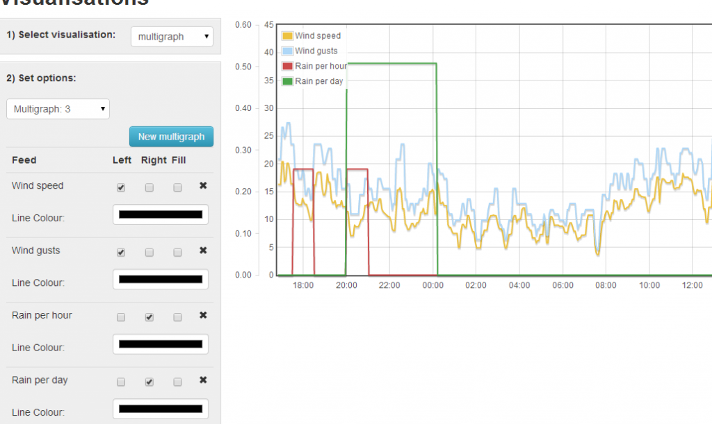
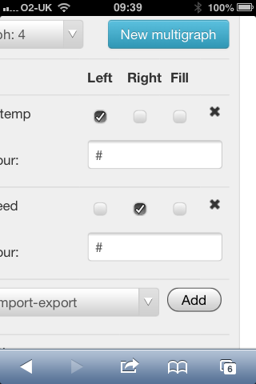

In the new v8.0, there is a function to change the line colours in the vis/multigraph, but if you change a colour, save & view the multigraph, I find that it has disappeared!
Example, I've created this multigraph;

That works fine, and can see it in a dashboard view.
But, now gone back into vis/multigraph/3, and change the line colours;
_1.png)
Save & exit as before, but the graph has now disappeared from my dashboard, so if I go back to vis/multigraph/3 as before;
_0.png)
...as you can see, all the settings have gone!
Paul
Re: V8.0 Multigraph line colours
Strange, I only see a '#' character instead of the real colours in 'Line colour:' If I change this # to something else, the colour changes to something grey.
And then, in the Visualizations menu while defining the multigraph I can see the 'zoom' range in a sort of orange as usual, but later on the dashboard no zoom range is shown with pressed mouse key (but zooming works ok).
And, Tooltips does not work at all in multigraph.
Why do these things behave so differently for different people? I am pretty sure I did not change anything in the sources.
EDIT: colours in 'Line colour:' works with Chrome! Does not work with Firefox 27.0.1 (Windows).
Re: V8.0 Multigraph line colours
..but if I view the vis/multigraph page via my iphone, I too see the '#'! - so it depends upon the browser too...

Paul
Re: V8.0 Multigraph line colours
Yes!
And:
If I define a multigraph in Chrome (Windows), it is not stored correctly and I am unable to place it on a dashboard at all. Nothing is shown, just the empty window. If I go back to the definition again (in Visualizations), the multigraph is not existent any more (not quite correct, the number is shown as 'multigraph: 1', but it is completely empty again).
Edit: I just see that this is the same behavior that Paul described above. Sorry, I thought he was talking about the colors disappear only.
But what can also be seen in Pauls first screenshot is, that the color is always shown as black in 'Line colour:' although it has different value in the graph.
Re: V8.0 Multigraph line colours
I discovered I have exactly the same issue with the multigraph. When you choose a different color than the default one and click save, the multigraph object itself is saved, but not its contents.
It seems I also have a problem with the "input on-time" input processing. Normally when a new day begins the counter should be set to zero again, so you can see, as for example in my case, how long the heating was on each day. This morning, according to my bargraph, the heating had already ran for more than six hours, although this was certainly not the case.
But I have to tell the whole story: I made a little modification to "bargraph.php". I changed the function vis_feed_data() a little bit so that instead of DAILY SECONDS ON, the bargraph would display DAILY HOURS ON :
function vis_feed_data()
{
if (valid) graph_data = get_feed_data(feedid,start,end,500);
var sum = 0;
for (z in graph_data)
{
graph_data[z][1] = graph_data[z][1]/3600; //Display daily hours ON instead of daily seconds ON
sum += graph_data[z][1];
}
console.log("Total kWh in window: "+sum);
plot();
}
However I can't see that this can be the cause for not resetting the counter, as graph_data is just a local array in "bargraph.php" that gets his values from a call to get_feed_data. So I didn't change nothing to the values that are in the feed or to the internal working of "input on-time".
Tom
Re: V8.0 Multigraph line colours
Hello Tom, the daily feed types such as input-ontime not resetting bug is now fixed as of version 8.0.1 https://github.com/emoncms/emoncms/releases/tag/8.0.1
Not sure about the multigraph color's, Il have a look.
Re: V8.0 Multigraph line colours
Found it, the problem was due to the # color character causing the URL fields to terminate at that point. The settings string needed to be passed through the function encodeURIcomponent, I've added this in and pushed it to the Develop branch, Il merge into the next sub release 8.0.2
Re: V8.0 Multigraph line colours
I've merged the fix into the master branch and incremented the version number to 8.0.2